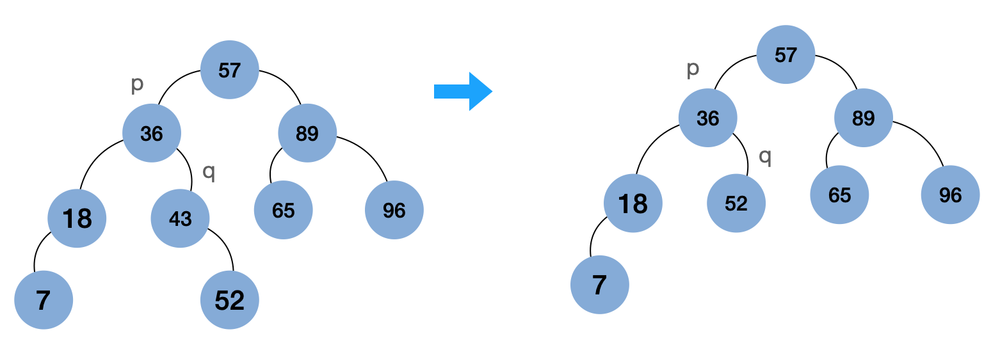
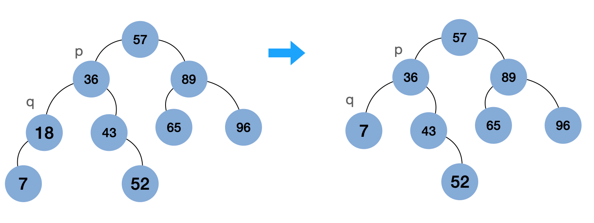
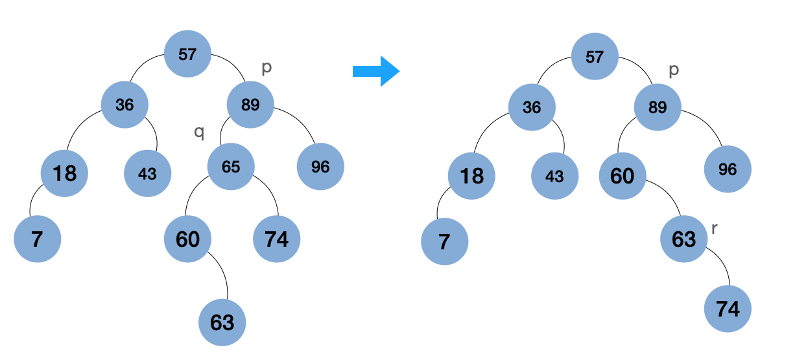

1 二叉排序树
1.1 定义
二叉排序树(Binary Sort Tree)，又称二叉查找树(Binary Search Tree)，是一种在结点里存储数据的二叉树。它或者是一棵空树，或者是具有以下特征的树：
- 若它的左子树不空，那么它的左子树的所有结点的值均小于根结点的值；
- 若它的右子树不空，那么它的右子树的所有结点的值均大于跟结点的值；
- 左子树与右子树也分别为二叉排序树。
显然，二叉排序树也是一种递归结构，其左右子树具有与整棵树同样的结构。
例1，考虑关键码的系列为[57, 89, 96, 36, 65, 43, 52, 7, 18, 60, 74]. 如下图1 是一棵合理的二叉排序树。
1.2 性质
性质 一棵结点中存储着关键码(数据)的二叉树是二叉排序树，当且仅当通过中序遍历这棵二叉树得到的关键码序列是一个递增序列。
2 二叉排序树的实现
实现二叉排序树最关键的操作是数据项的插入，删除和查询。其中，插入和删除操作通常都要修改树的结构。
2.1 BST的插入
二叉排序树的插入，易见，对插入操作的基本要求是能够把新数据项加入(二叉排序树)中，并维持二叉排序树的完整性，包括关键码的顺序要求。对于任意一个待插入的数据项都是插入在二叉排序树的叶子结点，问题的关键是找到加入新结点的正确位置，并将新结点正确连接到树中。
插入操作中一个重要问题：如果遇到关键码相同的数据项怎么处理？在下面的处理中，总用新值替换关键码的已有关联值，这样会保证二叉排序中不会出现关键码重复的项。
查找位置就是用数据项的关键码来检索，
- 如果二叉树为空，就直接建立一个包含新建一个包含新关键码和关联值的树根结点；
- 否则，搜索新结点的插入位置，沿子结点关系向下：
- 遇到应该走向左子树而左子树为空，或者应该走向右子树而右子树为空时，就是找到了新数据项的插入位置，构造新结点并完成实际插入。
- 遇到结点里的关键码等于被检索关键码，直接替换关键值并结束。
下图是图1所示例二叉排序树的创建过程：
2.2 BST的查找
由于二叉排序树(及其子树)的根中保存的数据总是把树中的数据划分为较大和较小的两组，用需要查询的关键码与之比较，就可以知道下一步应该到哪棵子树去查询(这一过程是递归的)。
查询过程很清晰，就是根据被查询关键码与当前结点关键码的比较情况，决定是向左走还是向右走。遇到要查询关键码时成功结束，返回关键码的关联值；在无路可走时失败结束。
2.3 BST的删除
假设已经确定应该删除结点 $q$，它是其父结点 $p$ 的左子结点(为 $p$ 的右子结点的情况类似)，这时有两种情况：
- $q$ 是叶结点，这时只需要将 $p$ 到 $q$ 的引用置为None，删除就完成了。
-
$q$ 不是叶结点，那么就不能简单删除，需要把 $q$ 的子树连接到删除 $q$ 以后的树中，而且要宝成关键码的顺序。此时可分为三种情况：
- 如果 $q$ 没有左子树，有右子树，此时只需要把 $q$ 的右子树直接改作其父结点 $p$ 的左子树;
- 如果 $q$ 有左子树，没有右子树，此时只需要把 $q$ 的左子树直接改作其父结点 $p$ 的左子树；
- 如果 $q$ 既有左子树，又有右子树，此时先找到 $q$ 的左子树的最右结点，设为 $r$，显然它没有右子树。用 $q$ 的左子树作为 $p$ 的左子结点，并将 $q$ 的右子树作为 $r$ 的右子树。

注： 以上三种情况中，第2种和第3种实际上也可以合并成一种。
2.4 BST的实现代码
class Assoc(object):
def __init__(self, key, value):
self.key = key
self.value = value
def __lt__(self, other):
return self.key < other.key
def __le__(self, other):
return self.key <= other.key
def __str__(self):
return f'Assoc({self.key}, {self.value})'
class BinTNode(object):
def __init__(self, data, left=None, right=None):
self.data = data
self.left = left
self.right = right
class BSTree(object):
def __init__(self):
self._root = None
def is_empty(self):
return not self._root
def search(self, key):
cur = self._root
while not cur:
entry = cur.data
if key < entry.key:
cur = cur.left
elif key > entry.key:
cur = cur.right
else:
return entry.value
return None
def insert(self, key, value):
if self.is_empty():
self._root = BinTNode(Assoc(key, value))
return
cur = self._root
while True:
entry = cur.data
if key < entry.key:
if not cur.left:
cur.left = BinTNode(Assoc(key, value))
return
cur = cur.left
elif key > entry.key:
if not cur.right:
cur.right = BinTNode(Assoc(key, value))
return
cur = cur.right
else:
cur.data.value = value
return
def values(self):
cur, stack = self._root, SStack()
while cur or not stack.is_empty():
if cur:
stack.push(cur)
if cur.left:
cur = cur.left
else:
cur = None
else:
cur = stack.pop()
yield cur.data.value
if cur.right:
cur = cur.right
else:
cur = None
def entries(self):
if cur:
stack.push(cur)
if cur.left:
cur = cur.left
else:
cur = None
else:
cur = stack.pop()
yield cur.data.key, cur.data.value
if cur.right:
cur = cur.right
else:
cur = None
def delete(self, key):
p, q = None, self._root
if not q:
return
while q and key != q.data.key:
p = q
if key < q.data.key:
q = q.left
else:
q = q.right
if not q:
return
# q.left is None
if not q.left:
if p is None:
self._root = q.right
elif q is p.left:
p.left = q.right
else: # q is p.right
p.right = q.right
return
# q.left is not None and q.right is None
if q.left and not q.right:
if p is None:
self._root = q.right
elif q is p.left:
p.left = q.left
else: # q is p.right
p.right = q.left
return
r = q.left
while r.right:
r = r.right
r.right = q.right
if p is None:
self._root = q.left
elif q is p.left:
p.left = q.left
else: # q is p.right
p.right = q.left
def build_bst(entries):
bst = BSTree()
for k, v in entries:
bst.insert(k, v)
return bst3 参考
[1] 《数据结构与算法 Python语言描述》 裘宗燕 著 机械工业出版社， 2015.12